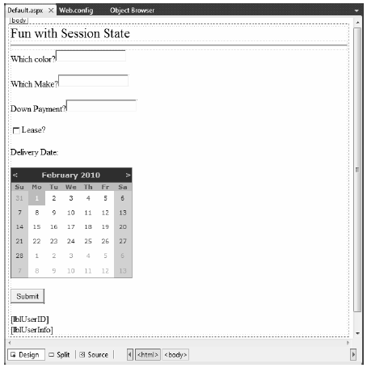

So much for our examination of application-level and cached data. Next, let’s check out the role of peruser data. As mentioned earlier, a session is little more than a given user’s ongoing interaction with a web application, which is represented via a unique HttpSessionState object. To maintain stateful information for a particular user, you can use the Session property in your web page class or in Global.asax. The classic example of the need to maintain per-user data is an online shopping cart. Again, if 10 people all log on to an online store, each individual will have a unique set of items that she (may) intend to purchase, and that data needs to be maintained.
When a new user joins to your web application, the .NET runtime automatically assigns the user a unique session ID, which is used to identify that user. Each session ID identifies a custom instance of the HttpSessionState type to hold on to user-specific data. Inserting or retrieving session data is syntactically identical to manipulating application data, for example:
// Add/retrieve session data for current user. Session["DesiredCarColor"] = "Green"; string color = (string) Session["DesiredCarColor"];
In Global.asax, you can intercept the beginning and end of a session via the Session_Start() and Session_End() event handlers. Within Session_Start(), you can freely create any per-user data items, while Session_End() allows you to perform any work you may need to do when the user’s session has terminated:
<%@ Application Language="C#" %>
...
void Session_Start(Object sender, EventArgs e)
{
// New session! Prep if required.
}
void Session_End(Object sender, EventArgs e)
{
// User logged off/timed out. Tear down if needed.
}
Like application state, session state may hold any System.Object-derived type, including your custom classes. For example, assume you have a new Empty Web Site project (named SessionState) that defines a class named UserShoppingCart:
public class UserShoppingCart { public string desiredCar; public string desiredCarColor; public float downPayment; public bool isLeasing; public DateTime dateOfPickUp; public override string ToString() { return string.Format ("Car: {0}<br>Color: {1}<br>$ Down: {2}<br>Lease: {3}<br>Pick-up Date: {4}", desiredCar, desiredCarColor, downPayment, isLeasing, dateOfPickUp.ToShortDateString()); } }
Now, insert a Global.asax file. Within the Session_Start() event handler, you can now assign each user a new instance of the UserShoppingCart class:
void Session_Start(Object sender, EventArgs e) { Session["UserShoppingCartInfo"] = new UserShoppingCart(); }
As the user traverses your web pages, you are able to pluck out the UserShoppingCart instance and fill the fields with user-specific data. For example, assume you have a simple *.aspx page that defines a set of input controls that correspond to each field of the UserShoppingCart type, a Button for setting the values, and two Labels that will be used to display the user’s session ID and session information (see Figure 34-7).
Figure 34-7 The session application GUI
The server-side Click event handler for the Button control is straightforward (scrape out values from TextBoxes and display the shopping cart data on a Label control):
protected void btnSubmit_Click(object sender, EventArgs e) { // Set current user prefs. UserShoppingCart cart = (UserShoppingCart)Session["UserShoppingCartInfo"]; cart.dateOfPickUp = myCalendar.SelectedDate; cart.desiredCar = txtCarMake.Text; cart.desiredCarColor = txtCarColor.Text; cart.downPayment = float.Parse(txtDownPayment.Text); cart.isLeasing = chkIsLeasing.Checked; lblUserInfo.Text = cart.ToString(); Session["UserShoppingCartInfo"] = cart; }
Within Session_End(), you may wish to persist the fields of the UserShoppingCart to a database or whatnot (however, as you will see at the conclusion of this chapter, the ASP.NET Profile API will do so automatically). As well, you may wish to implement Session_Error() to trap any faulty input (or perhaps make use of various validation controls on the Default.aspx page to account for such user errors).
In any case, if you were to launch two or three instances of your browser of choice all posting to the same URL (via a copy/paste operation as you did for the data cache example), you would find that each user is able to build a custom shopping cart that maps to his unique instance of HttpSessionState.
The HttpSessionState class defines a number of other members of interest beyond the type indexer. First, the SessionID property will return the current user’s unique ID. If you wish to view the automatically assigned session ID for this example, handle the Load event of your page as follows:
protected void Page_Load(object sender, EventArgs e) { lblUserID.Text = string.Format("Here is your ID: {0}", Session.SessionID); }
The Remove() and RemoveAll() methods may be used to clear items out of the user’s instance of HttpSessionState:
Session.Remove("SomeItemWeDontNeedAnymore");
The HttpSessionState type also defines a set of members that control the expiration policy of the current session. Again, by default each user has 20 minutes of inactivity before the HttpSessionState object is destroyed. Thus, if a user enters your web application (and therefore obtains a unique session ID), but then does not return to the site within 20 minutes, the runtime assumes the user is no longer interested and destroys all session data for that user. You are free to change this default 20-minute expiration value on a user-by-user basis using the Timeout property. The most common place to do so is within the scope of your Session_Start() method:
void Session_Start(Object sender, EventArgs e) { // Each user has 5 minutes of inactivity. Session.Timeout = 5; Session["UserShoppingCartInfo"] = new UserShoppingCart(); }
Note If you do not need to tweak each user’s Timeout value, you can alter the 20-minute default for all users via the Timeout attribute of the <sessionState> element within the Web.config file (examined at the end of this chapter).
The benefit of the Timeout property is that you have the ability to assign specific timeout values separately for each user. For example, imagine you have created a web application that allows users to pay cash for a given membership level. You may say that Gold members should time out within one hour, while Wood members should get only 30 seconds. This possibility begs the question, how can you remember user-specific information (such as the current membership level) if users close the browser and come back at a later time? One possible answer is through the use of the HttpCookie type. (And speaking of cookies . . .)
Source Code The SessionState web site is included under the Chapter 34 subdirectory.